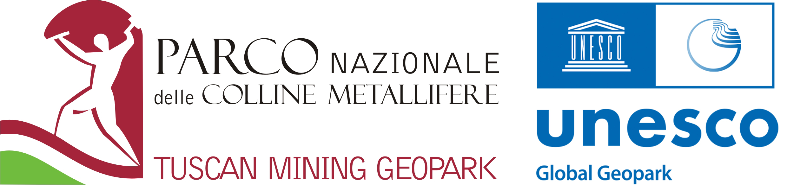

Sostenitore · Gavorrano
Parco Nazionale delle Colline Metallifere Grossetane
Tuscan Mining UNESCO Global Geopark
Il Parco Nazionale delle Colline Metallifere Grossetane (Tuscan Mining UNESCO Global Geopark) aderisce alla rete di sostegno di Gioco di Squadra. Spazi e raccordo con iniziative di sostenibilità e valorizzazione del territorio delle Colline Metallifere.
Il contributo a Gioco di Squadra
Spazi e raccordo con iniziative di sostenibilità e valorizzazione del territorio delle Colline Metallifere.
Territorio di riferimento: Gavorrano (GR). .
Scopri il progetto →